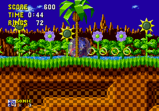
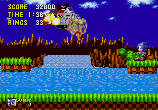
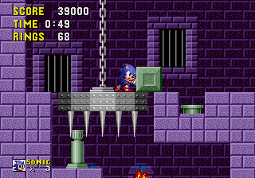
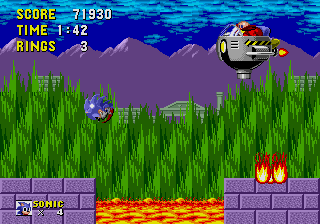
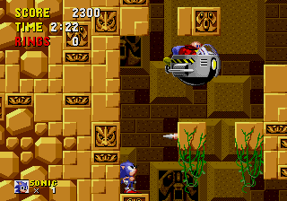
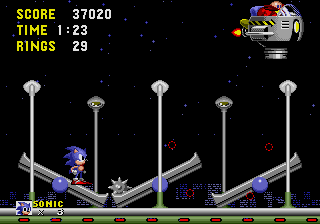
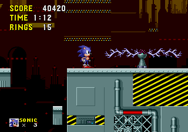
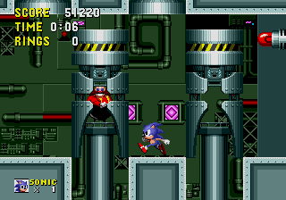

You are listening to: Marble Zone (Yamaha SoftSynth Version) - MPS
Marble Zone
Spring Yard Zone
Labyrinth Zone
Starlight Zone
Scrap Brain Zone
*Mega Drive*Sonic the Hedgehog Guide

Game Info | Music | Cheats and Tips | Cheat Codes | Boxes | Screenshots
Contents
*Introduction*
*In Depth Walkthrough*
Special Stage
Green Hill Zone | Marble Zone | Spring Yard Zone
Labyrinth Zone | Starlight Zone | Scrap Brain Zone | Final Zone
*Introduction*
 This walkthrough will tell all about the hazards in each act of every zone and will help you find the best way of tackling the levels. At the end of every zone there is a boss stage, in which you will have to find out a pattern in order to defeat it. In this guide you will also be able to find out what each bosses weaknesses are, and the best way to attack. It doesn't matter if you have either the Mega Drive or Genesis version - they're both the same console, and both the same game. Alrighty, let's get started.
This walkthrough will tell all about the hazards in each act of every zone and will help you find the best way of tackling the levels. At the end of every zone there is a boss stage, in which you will have to find out a pattern in order to defeat it. In this guide you will also be able to find out what each bosses weaknesses are, and the best way to attack. It doesn't matter if you have either the Mega Drive or Genesis version - they're both the same console, and both the same game. Alrighty, let's get started.
*In Depth Walkthrough*
Special Stage
 Collect 50 or more rings in Acts 1 or 2 throughout Green Hills Zone to Labyrinth Zone and you will find a giant gold ring by your finish marker. Pass the marker to complete the stage, then quickly jump through the ring to enter the special stage. The special stage is a 360 degree anti grav zone, and takes some mastering to get the hang of. Learn how to move as the screen slowly spins around, this way you can easily avoid the 'Goal' marker, which means you leave the zone with nothing but the rings you collected. Finish the level and you'll find the current Chaos Emerald encased within diamonds. Hit the diamonds in order to break them - they turn several colours before breaking, so patience is the greatest virtue here. There are seven Chaos Emerald Special Stages to complete, and other obstacles will get in your way or hinder your progress such as bumpers, 'Reverse' spots, or speed up/speed down rotation spots. Collect 50 rings in the Special Stage to grab a continue, in case you falter in later levels. Collect all seven Emeralds to see the better ending to Sonic 1.
Collect 50 or more rings in Acts 1 or 2 throughout Green Hills Zone to Labyrinth Zone and you will find a giant gold ring by your finish marker. Pass the marker to complete the stage, then quickly jump through the ring to enter the special stage. The special stage is a 360 degree anti grav zone, and takes some mastering to get the hang of. Learn how to move as the screen slowly spins around, this way you can easily avoid the 'Goal' marker, which means you leave the zone with nothing but the rings you collected. Finish the level and you'll find the current Chaos Emerald encased within diamonds. Hit the diamonds in order to break them - they turn several colours before breaking, so patience is the greatest virtue here. There are seven Chaos Emerald Special Stages to complete, and other obstacles will get in your way or hinder your progress such as bumpers, 'Reverse' spots, or speed up/speed down rotation spots. Collect 50 rings in the Special Stage to grab a continue, in case you falter in later levels. Collect all seven Emeralds to see the better ending to Sonic 1.
| Act 2 | Act 3 | Dr. Robotnik

Act 1
A nice intro level, there are plenty of enemies, but they appear in pretty obvious places. Try and stay on high platforms after the restart post to get plenty of rings for the Special Stage.
Act 2
Tricky this, as the bottom of the level consists of an underground cavern. The best way through half of the level is at the first spring, jump just over the spikes, to the left, collect the items, spin into the wall and grab the speed boots. Spikes crop up more often in this Act, and if you hit them, you lose rings, then die, so be careful. At the end of the cavern, hit the spring upwards, then travel left in the air to land on top of the loop to get and extra life.
Act 3
Long level this one, grab the invincibility in the 2nd tree (just above Sonic's head) and leg it through much of the act. Try to keep at the top, but if you find yourself underground, when you get to the yellow spring (taking you upwards to a restart point, and a rolling spiky platform across) jump over the spikes to the right of the spring instead for rings and an extra life.

Dr. Robotnik
Easy Peasy. Even easier if you get the invincibility hidden in the tree before the final restart post. Hit Robotnik as he lowers, but hide under the two hovering platforms when he comes towards you with the classic boulder on the chain. Hit him when he flies away from you and hide as he comes back. Repeat this until you beat him.
Act 1 | Act 2 | Act 3 | Dr. Robotnik

Act 1
Introducing the lava, ladies and gentlemen! Beware of the leaping lava balls and the crushing green pillars. On the way up near the end (in the marble palace) jump on the first spiked platform on the chain, and as it's being pulled up jump into the wall for rings and a life.
Act 2
This is pretty much very similar to Act 1. Except this act involves a lot more lava, including waterfalls of the type. You have been warned.
Act 3
Very hazardous act. you have two routes to go at the start, which meet near the middle of the level. From there it's spikes, lava, platforms on chains and more spikes.

Dr. Robotnik
You start with two platforms and lava inbetween. As Robotnik heads toward you hit him, when he appears above you jump to the opposite platform. repeat this process to anger him some more.
Act 1 | Act 2 | Act 3 | Dr. Robotnik
 Act 1
Act 1
As the title suggest, plenty of springs in this level. Be careful for looping spiked mace balls as well.
Act 2
Lots of bumpers are in this level, don't get too confused! Look out for big drops too.
Act 3
A level which is a mix between Act 1 and 2, with a little spring/spike situation in the middle of the level. Beware.
 Dr. Robotnik
Dr. Robotnik
Robotnik will try to drill your head with a spike when he flies above you. move away when he does this and hit him while he's stuck in the floor. Every time you repeat this, the floor will slowly be destroyed by Robotnik, limiting your attack space, so be quick.
Act 1 | Act 2 | Act 3 | Dr. Robotnik
 Act 1
Act 1
This is the first time you will be subdued to water in this game. Make sure you grab air bubbles or else you'll drown.
Act 2
A lot more complicated than the last act, you'll find yourself in and out of water. Watch out for obvious traps, such as the driller robots that pop up out of the ground unexpectedly.
Act 3
You'll find yourself underwater for nearly the whole level in this act, be sure to grab plenty of air. you have a choice to go down or carry on up near the middle of the level - keep to the bottom if you don't want a rough time.

Dr. Robotnik
Forget him - you can't defeat Robotnik this time. He just tries to get away from you. Your main concern here is to get to the top, avoiding all the obstacles and try not to drown, as the water will catch up with you. There are no air bubbles to save you, so hurry.
Act 1 | Act 2 | Act 3 | Dr. Robotnik
 Act 1
Act 1
A breezy level, although you'll need to dodge the lava guns and orbinauts. Be careful of the platform hopping you'll need to do during the course of the level too.
Act 2
Bigger loops, seesaws and more bombs can be found on this level. If you can avoid the bombs and orbinauts, you'll finish this act fairly quickly.
Act 3
You'll find a lot more bombs here, and there are some pretty jammy situations, but try to stay at the top of the level and you'll miss the most of it.

Dr. Robotnik
Using the three seesaws, use the spiked balls on the opposite side to either propel you up to hit Robotnik, or use them to hit Robotnik. Either way works, as long as they are on target. These aren't your ordinary spiked balls - they explode within seconds, so speed is of the essence.
Act 1 | Act 2 | Act 3

Act 1
Pretty obvious level, be very careful where you tread. Appearing platforms, electric generators, flamethrowers, bomb throwing pigs... they can all be found on this level. Beware of ledges that give way under your feet as well - this could lead to your death, so time your leaps.
Act 2
Even worse. At the start, you'll want to take the highest route possible. It's not pretty, but the bottom of the level is pant-wettingly difficult. Don't run too fast.
Act 3
All the dangers of Act 1, rolled into a Labyrinth Zone stylee level. this is the last zone before the final boss. Don't be too hasty, and double-check your air count. At the start, run past the moving platform once you hit the switch and fall down the ledge before the gap closes - this will lead to a bottom route. This is the safest way to tackle the stage.
This is ti- the final furlong. Robotnik has a special treat for you, and you're just in time to be challenged! There are 4 gaps in the top and bottom floors. Two cylindrical capsules will either rise or fall or both, Robotnik will only be in one of the two capsules appearing. Avoid the empty capsule and hit Robotnik's capsule. Next lasers will start charging up. Stand in a place where you think the pink spheres of energy won't get you, and avoid them as they come towards you. Two cyndrical capsultes, different from the last, will appear again. Repeat the exact same process until you have to chase Robotnik to his Egg-o-matic. Just as Robotnik starts to fly off, hit him one more time as a final insult before the credits.